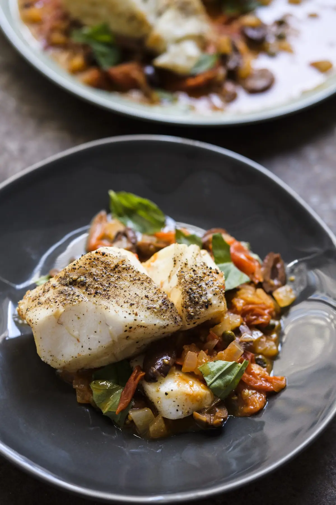

Poached Cod in Tomato-Garlic Broth
- Total time45 mins
- Serves4
- Ingredients12
- Steps4

Ingredients
- Four 6- to 8-ounce skinless cod fillets
- Ksher salt and ground black pepper
- 3 tablespoons extra-virgin olive oil
- 1 teaspoon finely chopped anchovy fillets
- 4 medium garlic cloves, finely chopped
- 1/4 teaspoon red pepper flakes
- 1 medium yellow onion, finely chopped
- 1/2 cup dry white wine or vermouth
- 1 pound grape tomatoes, halved
- 1/2 cup pitted Kalamata olives, halved
- 2 tablespoons drained capers
- 1/3 cup lightly packed torn fresh basil
Directions
- Season the cod fillets on both sides with salt and pepper. In a 12-inch skillet over medium, heat the oil until shimmering. Add the anchovy and cook, stirring and mashing, until the bits dissolve, about 1 minute. Add the garlic and pepper flakes and cook, stirring, until the garlic begins to brown, 45 to 60 seconds. Add the onion and ½ teaspoon salt, then cover and reduce to medium-low. Cook, stirring, until the onion is softened, 3 to 4 minutes.
- Pour in the wine, bring to a simmer over medium-high and cook, uncovered, until the liquid is almost fully evaporated, 1 to 2 minutes. Add the tomatoes and cook, uncovered and stirring occasionally, until they begin to break down, about 3 minutes. Stir in 1 cup, the olives and caper, then bring to a simmer
- Nestle the fish in a single layer in the sauce and reduce to medium-low. Cover and cook until the centers of the fillets reaach 120 degrees farenheight or the flesh flakes easily when cut, 5 to 8 minutes. Use a slotted spatula to transfer them to individual bowls or plates.
- Set the skillet over medium-high and cook the sauce, stirring, until slightly thickened, 2 to 3 minutes. Taste and season with salt and pepper. Spoon around the fish, dividing it evenly, then sprinkle with the basil and black pepper.
Recipe credit: 177milkstreet.com and Milk Street Tuesday Nights by Christopher Kimball